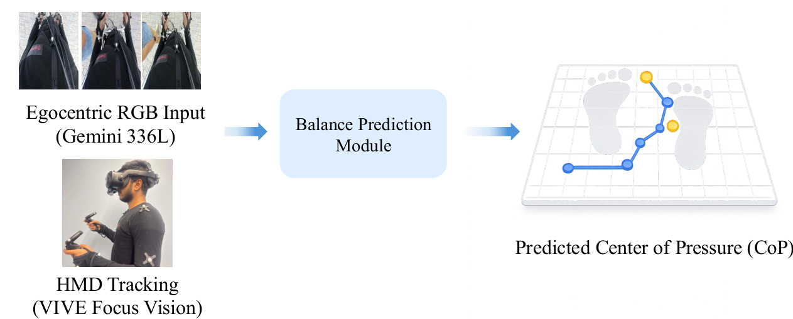
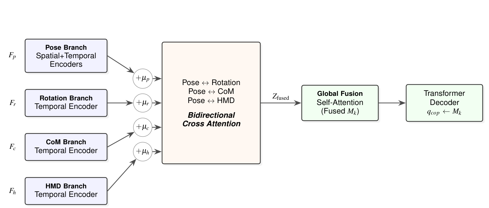
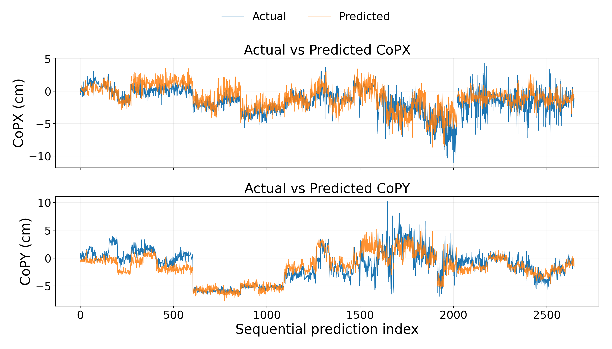
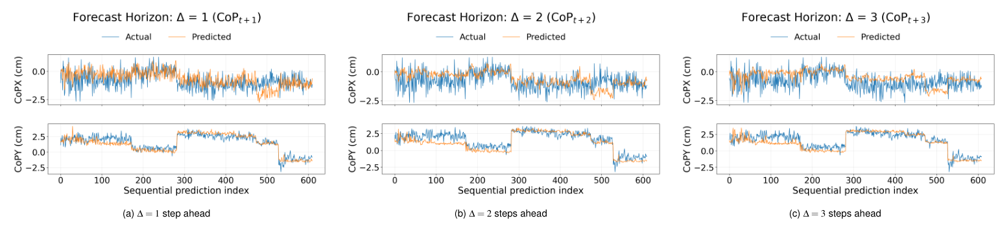

Egocentric pose for balance
Estimate real-valued CoP during VR interaction using reconstructed body pose to complement the limited full-body information available from HMD motion.

The research
Maintaining balance is important for safe interaction in immersive virtual reality (VR), where visual–vestibular conflicts can affect postural stability. Most prior works on VR-based balance analysis rely primarily on motion signals from the head-mounted display (HMD), which capture head movement but provide only limited information about full-body biomechanics. As a result, directly predicting biomechanical balance indicators, such as the Center of Pressure (CoP), from VR sensing data remains challenging. In this paper, we present EgoBalanceFormer, a multimodal framework for predicting human balance during VR interaction by leveraging egocentric pose reconstruction as a body-aware sensing modality together with VR-native HMD motion signals. Unlike prior VR balance approaches that rely primarily on sparse device motion such as HMD trajectories, our approach uses egocentric vision to reconstruct full-body pose and derive biomechanical cues—including lower-body kinematics and center-of-mass (CoM) dynamics that are critical for modeling balance control. These pose-derived biomechanical cues are fused with VR-native HMD motion signals and processed through temporal encoders to capture motion dynamics over time. We further apply bidirectional cross-attention between lower-body joint kinematics, CoM dynamics, rotational features, and HMD motion features to capture complementary biomechanical relationships. The refined multimodal representations are fused and decoded using a transformer with a learnable CoP query to regress CoPₓ and CoPᵧ . We evaluate EgoBalanceFormer against several machine learning and deep learning baselines for CoP prediction. Experimental results show improved accuracy and stronger robustness across participants, demonstrating that egocentric pose-derived biomechanical cues significantly enhance balance prediction compared with using VR-device motion signals alone.
Egocentric pose becomes an intermediate sensing representation for balance, connecting visual body reconstruction to continuous biomechanical prediction.
Estimate real-valued CoP during VR interaction using reconstructed body pose to complement the limited full-body information available from HMD motion.
Derive lower-body kinematics, pelvis-relative center-of-mass dynamics, and segment rotational features from egocentric 3D pose.
Refine pose features through bidirectional cross-attention with CoM, rotation, and HMD streams. A learnable CoP query decodes the fused representation.
The method
From first-person RGB and headset motion to a two-dimensional Center of Pressure estimate.


Pose serves as the anchor stream. Bidirectional cross-attention exchanges information with the rotation, CoM, and HMD branches. Global self-attention fuses these tokens into a shared memory, which a learnable CoP query reads through a transformer decoder.
Evaluated on VRBalance, with synchronized egocentric observations, full-body motion, VR-device tracking, and balance-board measurements.
Participants performed a standing rhythm-game task in VR. A Gemini 336L camera mounted on a VIVE Focus Vision HMD recorded egocentric RGB; a Vicon system and BTrackS balance board provided pose and CoP supervision. At inference, the method uses estimated egocentric pose and HMD motion. Normalization statistics are computed on each training split, and participants are kept separate across training, validation, and test sets.
Experimental findings
Egocentric pose-derived cues improve CoP prediction over the matched HMD-only architecture and all listed HMD-based baselines.
| Method / input | CoPX | CoPY | Threshold accuracy (%) ↑ | ||||||
|---|---|---|---|---|---|---|---|---|---|
| RMSE ↓ | MAE ↓ | r ↑ | RMSE ↓ | MAE ↓ | r ↑ | ≤ 1 cm | ≤ 2 cm | ≤ 3 cm | |
| XGBoost | 2.13 | 1.73 | 0.47 | 1.65 | 1.30 | 0.62 | 20.41 | 52.57 | 70.75 |
| RandomForest | 2.15 | 1.82 | 0.45 | 1.75 | 1.41 | 0.61 | 19.81 | 51.08 | 68.40 |
| ExtraTrees | 2.04 | 1.64 | 0.45 | 1.79 | 1.43 | 0.64 | 18.88 | 49.72 | 69.80 |
| Lasso Regression | 1.85 | 1.48 | 0.46 | 1.52 | 1.25 | 0.64 | 19.80 | 54.77 | 78.33 |
| LSTM | 1.82 | 1.42 | 0.41 | 1.37 | 1.12 | 0.65 | 25.04 | 61.07 | 80.77 |
| GRU | 1.79 | 1.39 | 0.43 | 1.39 | 1.12 | 0.65 | 25.03 | 61.31 | 81.53 |
| DeepTCN | 1.98 | 1.57 | 0.42 | 1.39 | 1.21 | 0.63 | 24.55 | 60.32 | 80.56 |
| CNN-LSTM | 1.73 | 1.35 | 0.46 | 1.43 | 1.14 | 0.64 | 25.47 | 61.23 | 81.44 |
| EgoBalanceFormer (HMD only) | 1.67 | 1.31 | 0.51 | 1.37 | 1.09 | 0.65 | 27.07 | 64.37 | 83.52 |
| EgoBalanceFormer (EgoPose + HMD) | 1.54 | 1.18 | 0.56 | 1.20 | 0.95 | 0.73 | 31.57 | 68.37 | 87.05 |
Table 2 from the paper. RMSE and MAE are in centimeters; r denotes Pearson’s correlation. All external baselines use HMD motion only. The HMD-only EgoBalanceFormer variant isolates the architecture’s contribution; the full variant adds pose-derived biomechanical cues.

The predicted trajectories track the overall drift and oscillation of a held-out subject’s CoP, with closer agreement along CoPY. Some rapid changes are attenuated.
Adding pose-derived cues raises accuracy within 1 cm from 27.07% to 31.57% and CoPY correlation from 0.65 to 0.73.
Different biomechanical cues contribute differently to lateral and anterior–posterior balance prediction.
| Method / input | CoPX | CoPY | ||||
|---|---|---|---|---|---|---|
| RMSE ↓ | MAE ↓ | r ↑ | RMSE ↓ | MAE ↓ | r ↑ | |
| Estimated Pose | 1.51 | 1.16 | 0.51 | 1.24 | 0.99 | 0.71 |
| Pose + CoM | 1.53 | 1.19 | 0.49 | 1.17 | 0.92 | 0.72 |
| Pose + HMD | 1.54 | 1.18 | 0.53 | 1.17 | 0.93 | 0.71 |
| Pose + Rotation | 1.53 | 1.16 | 0.52 | 1.24 | 0.98 | 0.71 |
| CoM + Rotation | 1.76 | 1.36 | 0.40 | 1.34 | 1.06 | 0.66 |
| CoM + HMD | 1.70 | 1.35 | 0.51 | 1.34 | 1.09 | 0.66 |
| Pose + Rotation + CoM + HMD | 1.54 | 1.18 | 0.56 | 1.20 | 0.95 | 0.73 |
Table 3 from the paper. All errors are in centimeters.
Procrustes alignment reduces global pose variations before balance prediction. CoPX RMSE improves from 1.68 to 1.54 cm, CoPY RMSE from 1.34 to 1.20 cm, and accuracy within 3 cm from 82.65% to 87.05%.
Forecasting experiments evaluate prediction horizons from 0.5 to 2 seconds, with gradual degradation as the horizon increases.
| Forecast horizon | CoPX | CoPY | Threshold accuracy (%) ↑ | ||||||
|---|---|---|---|---|---|---|---|---|---|
| RMSE ↓ | MAE ↓ | r ↑ | RMSE ↓ | MAE ↓ | r ↑ | ≤ 1 cm | ≤ 2 cm | ≤ 3 cm | |
| 0.5 seconds | 1.65 | 1.27 | 0.45 | 1.24 | 0.98 | 0.71 | 29.69 | 65.40 | 85.01 |
| 1.0 seconds | 1.69 | 1.29 | 0.38 | 1.25 | 0.98 | 0.68 | 29.22 | 65.44 | 84.10 |
| 1.5 seconds | 1.69 | 1.30 | 0.36 | 1.25 | 0.98 | 0.67 | 28.61 | 65.57 | 83.38 |
| 2.0 seconds | 1.73 | 1.36 | 0.33 | 1.27 | 0.99 | 0.64 | 28.13 | 63.53 | 83.19 |
Table 5 from the paper. These are forecasting results; the main results above concern time-indexed CoP estimation.

The study covers 18 participants and one standing VR task on a flat, stationary surface. Broader populations and interaction scenarios remain to be evaluated. Pose-estimation errors can propagate into CoP prediction, and approximately 2 Hz supervision limits the modeling of rapid postural adjustments. This work demonstrates CoP regression; fall-risk detection, adaptive feedback, and improvements in user safety require further validation.
Accepted to IEEE Transactions on Visualization and Computer Graphics (TVCG) for IEEE ISMAR 2026. Final DOI, volume, and page numbers are not included in the supplied manuscript.
@article{azam2026egobalanceformer,
title = {EgoBalanceFormer: Predicting Human Balance from
Egocentric Pose and VR-Native Motion},
author = {Azam, Md Mushfiqur and Anjum, Nipa and
Quarles, John and Desai, Kevin},
journal = {IEEE Transactions on Visualization and Computer Graphics},
year = {2026},
note = {Accepted for presentation at IEEE ISMAR 2026}
}Download citation (.bib)